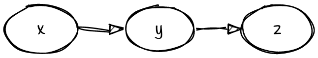
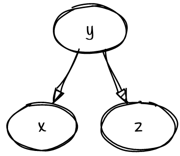
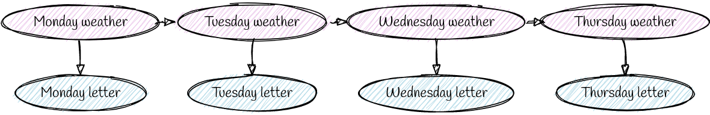
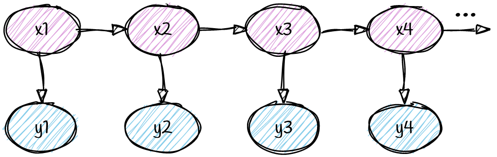

Markov Madness
Imagine Alyssa P. Hacker has two friends: Ben Bitdiddle and Louis Reasoner. Ben Bitdiddle is also friends with Joe Schmoe, but Joe Schmoe is not friends with either Alyssa or Louis. One way we could represent this series of friendships is with a simple diagram like below,
where people are represented by circles, or vertices, and the relationships between them are lines, or edges. In this case we chose to define an edge in our diagram as the presence of a friendship between two friends; however, we could have also constructed a diagram of just the opposite, where an edge means the lack of a friendship:
These sorts of diagrams, called graphs, are incredibly versatile, and can be used both visually and mathematically to represent relationships between all sorts of things. More formally, we define a graph \(G = (V,E)\) as
- \(V\): a set of vertices, also called /nodes/,
- and \(E\): a set of edges, which are pairs of vertices.
Note that graphs can contain either directed or undirected edges (but not both). For example, imagine if Alyssa was friends with Ben, but Ben wasn't friends with Alyssa, and all the other friendships remained bidirectional. We could represent that with the following /directed/ graph:
Graphs are a natural way in which humans present information: for example, we might represent a system of highways and roads as a directed graph, which an edge going in the direction that traffic flows in.
We're going to try to encode information and their dependencies using directed graphs. Let's consider again the event that you're eating ice cream on a given day. We might say that perhaps this event depends on the season and whether you're hungry. Whether you're hungry might depend on whether you've eaten dinner. A naive way that we might try to encode this might be the graph on the left.

A directed graphical model about eating ice cream.
Graphical Models
This brings us to the idea of graphical models. A graphical model is just a graph that in some way represents a set of distributions over random variables: each vertex represents a random variable (or event) and each edge in some way encodes a dependency.
Graphical models are useful because they give us information about how we can factor the distribution over all the variables (or the joint). For example, taking a subsection of the above graph, we can compute the probability of having eaten dinner and being hungry as the following:
\[ P(\text{dinner}, \text{hunger}) = P(\text{dinner}) \times P(\text{hunger} | \text{dinner}). \]
The intuition behind this is that \(P(\text{dinner})\) is conditionally independent of all other variables; however, the likelyhood of being hungry depends on whether you've eaten dinner, and thus needs to be conditioned on \(\text{dinner}\). We can extend this example to three variables:
This graph represents the factorization of the joint as
\[ p_{x,y,z}(x,y,z) = p_x(x)p_{y|x}(y|x)p_{z|y}(z|y). \]
This also makes some intuitive sense: the graph tells us that \(y\) really only depends on \(x\) and that \(z\) only really depends on \(y\), so a given event \(x,y,z\)'s likelihood can be computed using just those conditional dependencies, and the distribution of \(x\). This graph also yields another important result: we know that the joint can always be factored using the chain rule (from class one) as
\[ p_{x,y,z}(x,y,z) = p_x(x)p_{y|x}(y|x)p_{z|y, x}(z|y, x) \]
So setting those two factorizations equal to each other, we have that
\[ p_x(x)p_{y|x}(y|x)p_{z|y, x}(z|y, x) = p_x(x)p_{y|x}(y|x)p_{z|y}(z|y) \]
And simplifying, we find that \(p_{z|y, x}(z|y, x) = p_{z|y}(z|y)\). In other words, two probabilities are the same conditioning on \(x\) and not conditioning on \(x\). This relationship says that \(z\) and \(x\) are conditionally independent given \(y\).
Let's look at another:
This case is called a common cause, because \(x\) and \(z\) both depend on this other variable, \(y\), so they share that common cause. So here, we do something similar with the factorization- we know that given \(y\), \(x\) and \(z\) only depend on \(y\), so our factorization of the joint is:
\[ p_{x,y,z}(x,y,z) = p_y(y)p_{x|y}(x|y)p_{z|y}(z|y) \]
Hidden Markov Models
Now, armed with the knowledge of these two types of graph structures, we'll look at a very cool model called the Hidden Markov Model. In real life, we often deal with hidden (or latent) variables: things that cause observable events, but that we do not precisely know themselves.
For example, Harry Potter lives in a closet, and only knows what's happening in the outside world when Hermione sends him letters. Harry believes that the real world has two states (rainy and sunny), but Harry can't observe them himself. Hermione also doesn't tell him exactly what the weather is: she just tells him if she wore a sweater today or not. We can represent this as the following simple graphical model:
where Harry can observe Hermione's letters today, but not the weather. Thus we can call the weather a \latent variable. If we extend this to multiple days, we can see even more dependencies emerge. If it's rainy today, it might be more likely to be rainy tomorrow and so on. But also, if it's rainy today, Hermione is probably more likely to wear a sweater.
This dependency structure is called a Hidden Markov Model, and is applicable to a wide range of inference tasks beyond Harry Potter. In today's lab, we'll use it to localize our robot while exploring a maze!
Directed graphical model of an HMM, with xs as latent variables and ys as observations.
Exercise:
Derive the factorization of the probability distribution \(p_{x_1,...,x_N,y_1,...,y_N}(x_1,...,x_N,y_1,...,y_N)\) using the two graphical model structure types we learned above.
1. transferring some idea of latent variable and observations into a graphical model with a particular structure 2. using that graphical model, and the properties that come from graphical models, to do some cool math and develop an algorithm The second part of what we've done is rigorous- under the assumptions that the graphical model represents what we've told you it represents, all of the math follows very cleanly from properties of graphical models. The first part is where we've handwaved a little. It's not immediately obvious that this graph is correct. In the Harry Potter example, couldn't Tuesday's letter encode a little bit about Monday's weather? Why isn't there an edge between Monday and Tuesday? The reason that we've been able to say that each latent variable depends only on the one prior, and that each observation depends on only one latent variable is due to the definition of Hidden Markov Models. A Hidden Markov Model is defined to have the Markov Property, also sometimes known as memorylessness. This property encodes that the future, given the present, does not depend at all on the past. Another way to think about that is that the present fully encodes any of the information you may need from the past (this could be all of it, or none of it), and so when thinking about the past, it suffices to think only about the present. In math, we write \[ \mathbb{P}(X_t = x_t | X_{t-1} = x_{t-1}, X_{t-2} = x_{t-2}, ..., X_1 = x_1) = \mathbb{P}(X_t = x_t | X_{t-1} = x_{t-1} \] So given this mathematical factorization, we could actually derive the factorization of the joint distribution that we did above, and we'd find that it's equal to the factorization derived from the graphical model, demonstrating equivalence of the HMM and the graphical model. If you'd like to do this at home, the way to start is with the chain rule factorization of the joint that we showed in Lecture 2.
Lab #3: time to explore!
Last week, we used sensor readings from the robot to identify where we were in the maze. As you may have noticed, this has some limitations: for example, consider the following robot positions:
Two robot positions with identical sensor readings. How do we decide where we really are?
Even if the green and blue robots were to try every position of their sensor turret, they would still get the same exact readings. Clearly, in order to determine where they are, the robots must explore!
To implement this, we will consider the robot localization problem as a hidden markov model. Our hidden states \(X_{0..t}\) will be our robot positions, and \(Y_{0..t}\) will be our sensor readings. At every timestep we'll take a random movement and then a sensor reading, and use this data to infer our robot position!
Marginalization
To derive the forward algorithm, which is the algorithm we'll use to infer our robot position, we'll need one more probability tool, marginalization. First, recall our notation for joint probability distributions, which are probability distribution over multiple variables. We write
\[ p_{x,y}(1,1) \]
for the probability that \(X =1\) and \(Y=1\), or \(p_{x,y}(X=1, Y=1)\), but we'll use the shorthand above.
But now, given a joint probability distribution, say for two variables \(X,Y\), we might be interested in the marginal distribution for one variable, e.g. \(p_x(x)\). Let's look at the below joint probability distribution, where \(x\) takes values \(0,1\) and \(y\) takes values \(0,1,2\).
\[ \begin{aligned} p_{x,y}(0,0) &= \frac{4}{36} \\ p_{x,y}(0,1) &= \frac{5}{36} \\ p_{x,y}(0,2) &= \frac{6}{36} \\ p_{x,y}(1,0) &= \frac{6}{36} \\ p_{x,y}(1,1) &= \frac{7}{36} \\ p_{x,y}(1,2) &= \frac{8}{36} \\ \end{aligned} \]
What would you do if I asked you for the probability that \(x=0\)? You'd look at the above joint probability distribution, and take all the probabilities where \(x=0\):
\[ \begin{aligned} p_{x,y}(0,0) &= \frac{4}{36} \\ p_{x,y}(0,1) &= \frac{5}{36} \\ p_{x,y}(0,2) &= \frac{6}{36} \\ \end{aligned} \]
Then you'd probably sum those probabilities, to get the answer
\[ \begin{aligned} p_x(0) &= \frac{4}{36} + \frac{5}{36} + \frac{6}{36} \\ &= \frac{15}{36} \end{aligned} \]
This is a procedure that works all the time- we can write
\[ \mathbb{P}_Y(Y = y_1) = \sum_{i=1}^n \mathbb{P}(x_i, y_1) \]
and we can even do this on bigger joint distributions:
\[ \mathbb{P}_Y(X = x_1, Y = y_1) = \sum_{i=1}^n \mathbb{P}(x_1, y_1, z_i) \]
The idea is that to get a variable out of the joint distribution, we sum over all possible values that that variable takes.
Forward Algorithm
For our localization problem, the probability that we'd like to find is
\[ p(x_t| y_1, ..., y_t) = \frac{p(x_t, y_1, ..., y_t)}{p(y_1, ..., y_t)} \]
but note that it suffices to find \(p(x_t, y_1, ..., y_t)\), since \(p(y_1, ..., y_t)\) can just be thought of as a scaling constant. For simplicity, we will use the notation \(y_{1:t}\) to represent \(y_1,...,y_t\). Now, we can define
\[ m_t(x_t) = p(x_t, y_{1:t}) \]
Now, recall that from our graphical model setup of HMM's (or by the Markov property of HMM's) \(x_t\) only depends on the variable \(x_{t-1}\), so if we wanted to get \(p(x_t)\), the only variable we need to marginalize out is \(x_{t-1}\).
So we can write
\[ \begin{aligned} m_t(x_t) &= p(x_t, y_{1:t}) \\ &= \sum_{x_{t-1}} p(x_t, x_{t-1}, y_{1:t}) \\ &= \sum_{x_{t-1}} p(x_t, x_{t-1}, y_{1:t-1}, y_t) \\ \end{aligned} \]
Now we can use the chain rule to write
\[ p(x_t, x_{t-1}, y_{1:t-1}, y_t) = p(y_t|x_t, x_{t-1}, y_{1:t-1})p(x_t|x_{t-1}, y_{1:t-1})p(x_{t-1}, y_{1:t-1}) \]
But then, recall that \(y_t\) depends only on \(x_t\), and \(x_t\) depends only on \(x_{t-1}\), so
\[ \begin{aligned} p(y_t|x_t, x_{t-1}, y_{1:t-1}) &= p(y_t|x_t)\\ p(x_t|x_{t-1}, y_{1:t-1}) &= p(x_t|x_{t-1}) \end{aligned} \]
and substituting these into the above, we get
\[ \begin{aligned} m_t(x_t) &= \sum_{x_{t-1}} p(y_t|x_t)p(x_t|x_{t-1})p(x_{t-1}, y_{1:t-1}) \\ &= p(y_t|x_t) \sum_{x_{t-1}} p(x_t|x_{t-1})p(x_{t-1}, y_{1:t-1}) \\ &= p(y_t|x_t) \sum_{x_{t-1}} p(x_t|x_{t-1}) m_{t-1}(x_{t-1}) \end{aligned} \]
where we can pull \(p(y_t|x_t)\) out of the sum because it does not depend on \(x_{t-1}\).
And there we have the idea of the forward algorithm! We see that we can recursively compute \(m_t\) pretty easily from \(m_{t-1}\), and so on.
Moving the robots
Up to this point, our robots have been stationary. We can move our robots using some simple commands: bot.forward() to move one square forward, to move one square backward, bot.left() to turn 90 degrees to the left, and bot.right() to turn 90 degrees to the right.
bot.forward(), the robot will point its distance sensor forward and check if its safe to move before moving the sensor back to its previous position. If there is a wall in front of the robot and the robot decides it's unsafe to move, bot.forward() will return False; otherwise, it will return True. This is to ensure your robot does not run into walls.
Before you move on, test running a few movement commands in the Jupyter notebook.
Inference building blocks
Now it's time to begin building our inference pipeline. For the equation for \(\alpha(x_t)\) in the forward algorithm, we will need \(P(X_0=x_0)\), \(P(X_{t}=x_t|X_{t-1}=x_{t-1}, U_{t}=u_{t})\), and \(P(Y_t=y_t | X_t=x_t)\). Derive each of these expressions and implement them as Python methods in the Jupyter notebook. Assume that the robot has equal chance of starting in any state.
s_new = gm.simulatedAction(s, u) returns the state the robot would be in after performing action u in state s. u must be one of strings 'LEFT', 'RIGHT', or 'FORWARD', and s must be a tuple of a position integer (0 through 8) and an angle integer in degrees, going clockwise from 0 as north. This will return a new state in the same format as s.
int(x\_t==gm.simulatedAction(x\_tminusone, u)).
Finally, we can implement \(P(Y_t=y_t | X_t=x_t)\) as a gaussian with mean \(\mu_t\) set by where we are in the maze (\(x_t\)). So, an implementation using only a forwards sensor reading could be \(\mathcal N(y_t, \mu=\mu_t, \sigma=5)\) with m\u_t = gm.simulatedDistance(x\_t\[0\], x\_t\[1\]) using the previous convention of state being a tuple of (position, angle).
Putting it together
Implement a random walk on your robot in a loop by choosing randomly at each iteration whether to go forwards, turn left, or turn right. Then, implement the forward algorithm and print the most likely robot state at each iteration!
Once you've implemented the system, try it out from a few starting places in the maze. How many iterations does it take to converge to the right position? Does your implementation always converge? Discuss some strengths and limitations of this system with your group.